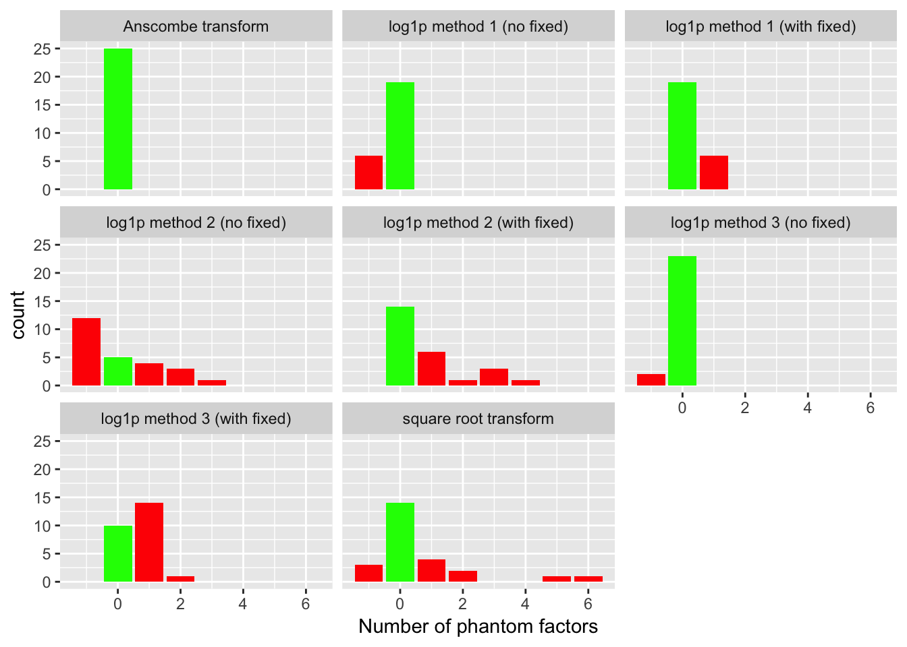
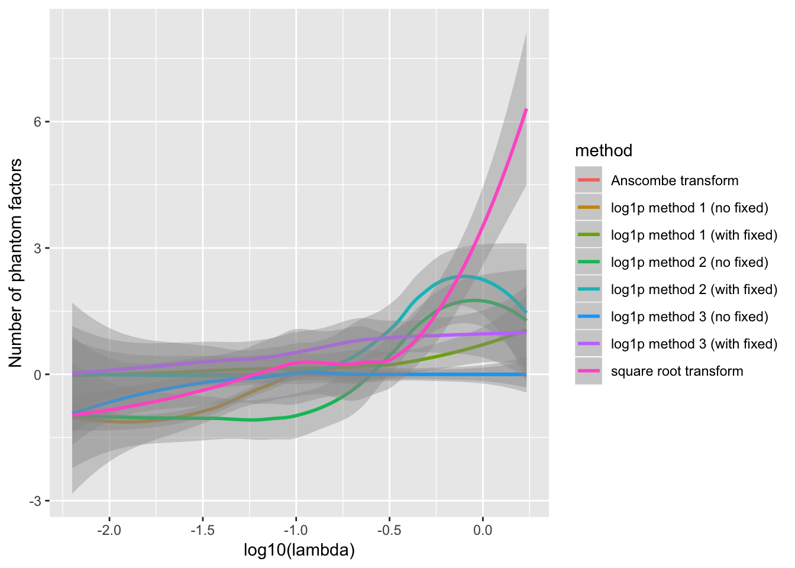
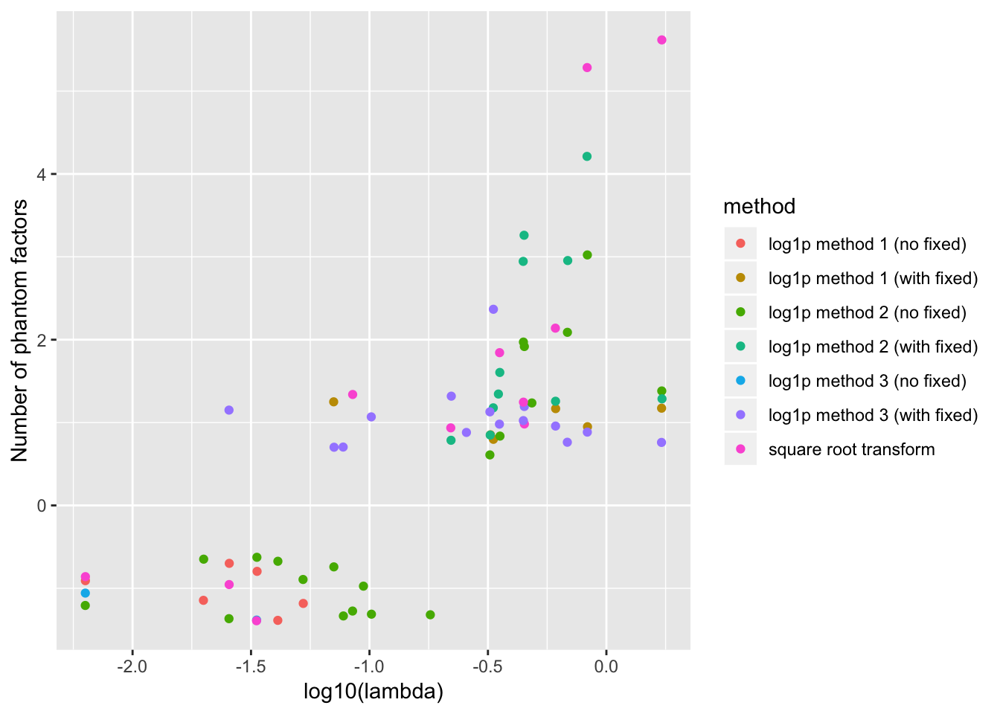

Last updated: 2019-02-19
workflowr checks: (Click a bullet for more information) ✔ R Markdown file: up-to-date
Great! Since the R Markdown file has been committed to the Git repository, you know the exact version of the code that produced these results.
✔ Environment: empty
Great job! The global environment was empty. Objects defined in the global environment can affect the analysis in your R Markdown file in unknown ways. For reproduciblity it’s best to always run the code in an empty environment.
✔ Seed:
set.seed(20180714)
The command set.seed(20180714) was run prior to running the code in the R Markdown file. Setting a seed ensures that any results that rely on randomness, e.g. subsampling or permutations, are reproducible.
✔ Session information: recorded
Great job! Recording the operating system, R version, and package versions is critical for reproducibility.
✔ Repository version: 2513c86
wflow_publish or wflow_git_commit). workflowr only checks the R Markdown file, but you know if there are other scripts or data files that it depends on. Below is the status of the Git repository when the results were generated:
Ignored files:
Ignored: .DS_Store
Ignored: .Rhistory
Ignored: .Rproj.user/
Ignored: docs/.DS_Store
Ignored: docs/figure/.DS_Store
Untracked files:
Untracked: analysis/gd_notes.Rmd
Untracked: code/count_sim.R
Untracked: code/pathways.R
Untracked: data/count_preproc_r1/
Untracked: data/lowrank/
Untracked: data/tmp14.rds
Untracked: data/tmpdata.rds
Untracked: data/tmplfsr.rds
Untracked: docs/figure/count_notes.Rmd/
Untracked: temp_debug.RDS
| File | Version | Author | Date | Message |
|---|---|---|---|---|
| Rmd | 2513c86 | Jason Willwerscheid | 2019-02-19 | wflow_publish(“analysis/count_preproc_r1.Rmd”) |
I compare four methods for fitting a FLASH model to count data. I use three commonly-used transforms, the log1p transform \[ Y_{ij} = \log \left( X_{ij} + 1 \right), \] the Anscombe transform \[ Y_{ij} = 2 \sqrt{ X_{ij} + \frac{3}{8}}, \] and the square-root transform \[ Y_{ij} = 2 \sqrt{X_{ij}}. \]
In the log1p case, I try adding mean factors to account for row- and column-specific scaling. Specifically, I fit a fixed row vector of all ones with column loadings \(c_j\) to be estimated and a fixed column vector of all ones with row loadings \(r_i\) to be estimated. This is approximately equivalent to estimating separate scaling factors for the rows and columns of the count data: \[ X_{ij} + 1 = e^{r_i}e^{c_j} \] Compare to the case where FLASH estimates a single rank-one factor with row loadings \(r_i\) and column loadings \(c_j\): \[ X_{ij} + 1 = e^{r_i c_j} \] Here, the scaling factors are not independent. Do note, however, that when \(r_i\) and \(c_j\) are both small, \[ X_{ij} = e^{r_i c_j} - 1 \approx r_i c_j, \] so fitting a single factor might work better when there is not a lot of baseline noise.
In the Anscombe case, fitting a single rank-one factor makes much more sense: \[ X_{ij} + \frac{3}{8} = \frac{1}{4} r_i^2 c_j^2\] Here, the usual rank-one FLASH model approximately estimates row- and column-specific scaling factors, whereas a model that includes fixed vectors of all ones introduces unwanted terms: \[ X_{ij} + \frac{3}{8} = r_i c_j + \frac{r_i^2}{2} + \frac{c_j^2}{2} \]
Finally, in the square-root case, the rank-one model fits exact (rather than approximate) scaling factors: \[ X_{ij} = \frac{1}{4} r_i^2 c_j^2. \]
I simulate “null” models where the data is generated by baseline Poisson noise that has been separately scaled by row and column: \[ X_{ij} \sim \text{Poisson}(r_i c_j \lambda) \] To approximate scRNA data, I want the rows (cells) to be broadly similar, but I allow the column (gene) scaling factors to be very different. I draw \[ r_i \sim \text{Unif}[0.5, 1.5],\ c_j \sim C t_2, \] where \(t_2\) is the half-\(t\) distribution with 2 degrees of freedom and \(C = \sqrt{2}\) is chosen such that \(\mathbb{E}c_j = 1\). To encourage sparsity, I draw \(\lambda\) from a Gamma distribution with shape parameter equal to 1 and rate parameter equal to 2.
sim.null <- function(n, p, seed = 666) {
set.seed(seed)
lambda <- rgamma(1, shape = 1, rate = 2)
row.scale <- runif(n, min = 0.5, max = 1.5)
col.scale <- abs(rt(p, df = 2)) / sqrt(2)
lambda.mat <- lambda * outer(row.scale, col.scale)
return(list(data = matrix(rpois(n * p, lambda.mat), nrow = n, ncol = p),
lambda = lambda))
}To each simulated dataset, I fit eight FLASH objects: six using a log1p transform (with or without fixed ones vectors and using any of the three variance structures described in the code below) and one each using an Anscombe transform and a square root transform. The best that one could hope for is that the mean factors account for all of the structure in the transformed data. If so, then we might be able to hope that FLASH will give a good estimate of the “correct” number of factors when the data comes from a more complicated model.
one.exp <- function(n, p, seed = 666, verbose = TRUE) {
sim <- sim.null(n, p, seed)
X <- sim$data
lambda <- sim$lambda
# Drop all-zero columns.
X <- X[, colSums(X) > 0]
p <- ncol(X)
# Data transformations.
logY <- log1p(X)
ansY <- 2 * sqrt(X + 0.375)
sqrtY <- 2 * sqrt(X)
# When Z is distributed Poisson(lambda), the variance of log(Z + 1) is
# approximately lambda / (lambda + 1)^2. I test three ways of dealing
# with this heteroskedacity: 1. Set S^2 = X / (X + 1)^2. Add a
# pseudo-count to zero counts so that the minimum S is 1 / 4. 2. Set
# S^2 = X / (X + 1)^2 and allow additional "noisy" variance to be
# estimated. 3. Estimate lambda using ash (take posterior means) and set
# S^2 = lambda.hat / (lambda.hat + 1)^2.
S.X <- sqrt(X / (X + 1)^2)
S.X.nozero <- S.X
S.X.nozero[S.X.nozero == 0] <- 0.5
ash.res <- ash(betahat = rep(0, n * p), sebetahat = 1,
lik = lik_pois(as.vector(X)), mode = 0)
lambda.hat <- ash.res$result$PosteriorMean
S.ash <- matrix(sqrt(lambda.hat / (lambda.hat + 1)^2), n, p)
# Flashier parameters.
fl.param <- list(prior.type = "normal.mix",
ash.param = list(control = list(maxiter.sqp = 50000)),
verbose = 2L * verbose)
log.param1 <- list(data = logY, S = S.X.nozero, var.type = NULL)
log.param2 <- list(data = logY, S = S.X, var.type = 0)
log.param3 <- list(data = logY, S = S.ash, var.type = NULL)
ans.param <- list(data = ansY, S = 1, var.type = NULL)
sqrt.param <- list(data = sqrtY, S = 1, var.type = NULL)
nomean.param <- list(greedy.Kmax = 10, backfit = "none")
mean.param <- list(greedy.Kmax = 9,
fix.dim = list(1, 2), fix.idx = list(1:n, 1:p),
fix.vals = list(rep(1, n), rep(1, p)),
backfit.after = 2, backfit.maxiter = 500,
final.backfit = FALSE)
res <- list()
res[[1]] <- do.call(flashier, c(fl.param, log.param1, nomean.param))
res[[2]] <- do.call(flashier, c(fl.param, log.param2, nomean.param))
res[[3]] <- do.call(flashier, c(fl.param, log.param3, nomean.param))
res[[4]] <- do.call(flashier, c(fl.param, log.param1, mean.param))
res[[5]] <- do.call(flashier, c(fl.param, log.param2, mean.param))
res[[6]] <- do.call(flashier, c(fl.param, log.param3, mean.param))
res[[7]] <- do.call(flashier, c(fl.param, ans.param, nomean.param))
res[[8]] <- do.call(flashier, c(fl.param, sqrt.param, nomean.param))
n.phantom <- lapply(res, function(fl) {
pve <- fl$pve
pve <- pve[pve > 0]
if (length(fl$fit$fix.dim) > 0)
n.phantom <- length(pve) - 2
else
n.phantom <- length(pve) - 1
return(n.phantom)
})
return(list(lambda = lambda,
n.phantom = n.phantom))
}
many.exp <- function(n, p, seeds, verbose = TRUE) {
res <- list()
for (seed in seeds) {
if (verbose)
cat("SEED: ", seed, "\n")
res <- c(res, list(one.exp(n, p, seed, verbose)))
}
return(res)
}Because the experiments take a long time to run, I pre-run them and load the results from file.
# devtools::load_all("~/Github/ashr")
# devtools::load_all("~/Github/flashier")
#
# n <- 100
# p <- 200
# res <- many.exp(n, p, seeds = 1:25)
# saveRDS(res, "../data/count_preproc_r1/res.rds")
res <- readRDS("./data/count_preproc_r1/res.rds")For each fit, I count the number of factors added. Ideally, the methods that don’t use fixed ones vectors will add a single mean factor, while the ones that do use fixed vectors will not add any additional factors. I count any extra factors as “phantom” factors. In the plots below, a value of -1 indicates that the method did not add any factors at all (not even a mean factor).
get.res.df <- function(res) {
all.lambda <- sapply(res, `[[`, "lambda")
method.names <- c("log1p method 1 (no fixed)",
"log1p method 2 (no fixed)",
"log1p method 3 (no fixed)",
"log1p method 1 (with fixed)",
"log1p method 2 (with fixed)",
"log1p method 3 (with fixed)",
"Anscombe transform",
"square root transform")
n.methods <- length(method.names)
n.phantom <- unlist(lapply(res, `[[`, "n.phantom"))
return(data.frame(lambda = rep(all.lambda, each = n.methods),
method = as.factor(rep(method.names, length(all.lambda))),
n.phantom = n.phantom))
}
resdf <- get.res.df(res)
library(ggplot2)Warning: package 'ggplot2' was built under R version 3.4.4ggplot(resdf, aes(x = n.phantom)) +
geom_bar(aes(fill = (n.phantom == 0), group = n.phantom)) +
facet_wrap(~ method) +
xlab("Number of phantom factors") +
scale_fill_manual(values = c("red", "green")) +
guides(fill = FALSE)
The Anscombe transform correctly adds a single factor every time. The second best method, log1p method 3 (which uses ashr to fix the standard errors of the log-transformed data), only does well when fixed ones vectors are not added. The method that uses a simpler approach to fixing the standard errors (log1p method 1) does reasonably well with or without fixed ones vectors. Finally, the method that estimates the standard errors of the log-transformed data (log1p method 2) and the square-root transform both do very poorly.
The behavior of each method depends to some extend on the value of \(\lambda\). For example, log1p method 1 fares better with fixed ones vectors when \(\lambda\) is very small, but better without when \(\lambda\) is closer to 1. Method 3 appears to only make mistakes when \(\lambda\) is very small.
ggplot(resdf, aes(x = log10(lambda), y = n.phantom)) +
geom_smooth(aes(color = method), method = 'loess', formula = y ~ x) +
ylab("Number of phantom factors")
For reference, the full results are as follows. To reduce clutter, I exclude all points where the correct number of factors are chosen.
ggplot(subset(resdf, n.phantom != 0),
aes(x = log10(lambda), y = n.phantom)) +
geom_jitter(aes(color = method)) +
ylab("Number of phantom factors")
sessionInfo()R version 3.4.3 (2017-11-30)
Platform: x86_64-apple-darwin15.6.0 (64-bit)
Running under: macOS High Sierra 10.13.6
Matrix products: default
BLAS: /Library/Frameworks/R.framework/Versions/3.4/Resources/lib/libRblas.0.dylib
LAPACK: /Library/Frameworks/R.framework/Versions/3.4/Resources/lib/libRlapack.dylib
locale:
[1] en_US.UTF-8/en_US.UTF-8/en_US.UTF-8/C/en_US.UTF-8/en_US.UTF-8
attached base packages:
[1] stats graphics grDevices utils datasets methods base
other attached packages:
[1] ggplot2_3.1.0
loaded via a namespace (and not attached):
[1] Rcpp_1.0.0 bindr_0.1 knitr_1.21.6
[4] whisker_0.3-2 magrittr_1.5 workflowr_1.0.1
[7] munsell_0.5.0 colorspace_1.3-2 R6_2.3.0
[10] rlang_0.3.0.1 dplyr_0.7.4 stringr_1.3.1
[13] plyr_1.8.4 tools_3.4.3 grid_3.4.3
[16] gtable_0.2.0 xfun_0.4 R.oo_1.21.0
[19] withr_2.1.2.9000 git2r_0.21.0 htmltools_0.3.6
[22] assertthat_0.2.0 yaml_2.2.0 lazyeval_0.2.1
[25] digest_0.6.18 rprojroot_1.3-2 tibble_1.4.2
[28] bindrcpp_0.2 R.utils_2.6.0 glue_1.3.0
[31] evaluate_0.12 rmarkdown_1.11 labeling_0.3
[34] stringi_1.2.4 pillar_1.2.1 compiler_3.4.3
[37] scales_1.0.0 backports_1.1.2 R.methodsS3_1.7.1
[40] pkgconfig_2.0.1 This reproducible R Markdown analysis was created with workflowr 1.0.1